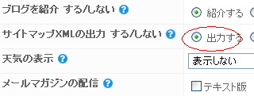

グーグルに追加ボタンもしくはAdd to Googleボタンとでもいうんでしょうか、結構よく見かけるボタンかと思います。
グーグルのＲＳＳフィード追加ボタンはこんなやつです。
ちょっと試しにおしてみませんか？
 （※サービス終了）
（※サービス終了）
「グーグル無料ツール」の記事一覧です。主に、ブログの作り方や作成方法の情報を更新してます。そのほか、Seesaa blog のカスタマイズ方法やアフィリエイト情報、ホームページ作成方法なども、、
グーグルに追加ボタンもしくはAdd to Googleボタンとでもいうんでしょうか、結構よく見かけるボタンかと思います。
グーグルのＲＳＳフィード追加ボタンはこんなやつです。
ちょっと試しにおしてみませんか？
（※サービス終了）
グーグルパックはグーグルがおすすめする無料のソフトウェアのことです。グーグルパックの内容としては衛星写真をみることができるGoogle Earthや高速ブラウザのFirefox、画像加工ツールのPicasaなどたくさんの無料ツールがあります。
グーグルパックの内容の続きGoogle Maps 2.0というのはグーグルの携帯電話向けの地図ソフトウェアですが、今回、それのアップグレード版ができたようです。
グーグルマップは、最近、海外のグーグルで利用されているストリートビューというのがすごいなと思いましたけど、さらに次々に新機能がでてきているようです。
Google Maps 2.0の新機能にマイロケーションの続きグーグルはGoogle Earthに「YouTube」レイヤーを追加したようです。グーグルアースはグーグルの検索技術と衛星からの航空写真や地図、地形などを組み合わせて、世界中の地形を立体的に表示する無料のソフトウェアのことです。
Google Earthはグーグルパックなどで無料でダウンロードできます。
そのグーグルアースにユーチューブ関連の新機能が加わったようなのですが、この追加された新機能は「YouTube」レイヤーといわれているようです。
Google Earth と YouTube レイヤーの続きグーグル用のサイトマップを作成したあとは、グーグルウェブマスター ツールを使ってグーグルに送信しておきましょう。サイトマップを送信することにより、検索エンジンがサイトの構造を認識しやすくなり、深い階層のページでも登録されやすくなります。
シーサーブログの場合、管理画面から「サイトマップを出力する」に設定しておけば、一日程度で自動でサイトマップが出来上がります。

この出力されたサイトマップは、サイトのURLに「sitemap.xml」をつけてアクセスすると実際に確認することができます。ここに記載されているURLの一覧を元に、検索エンジンがクロールしてくれますので、自サイトのページが登録されやすくなります。
サイトマップの作り方（ウェブマスターツール）の続き